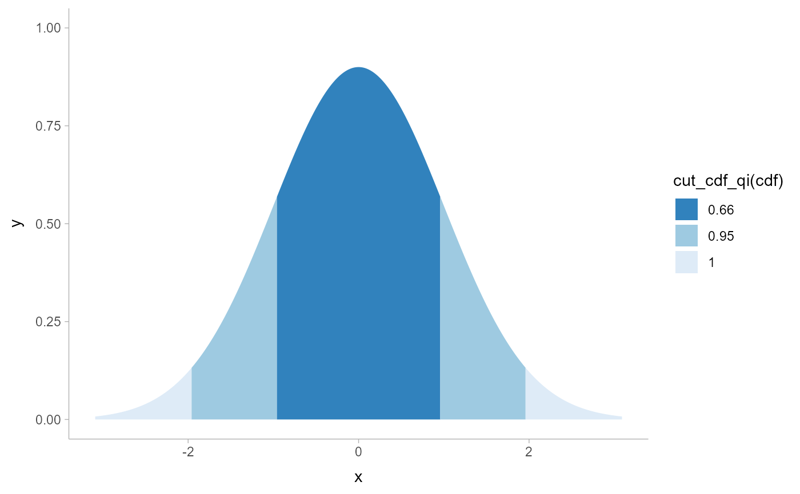
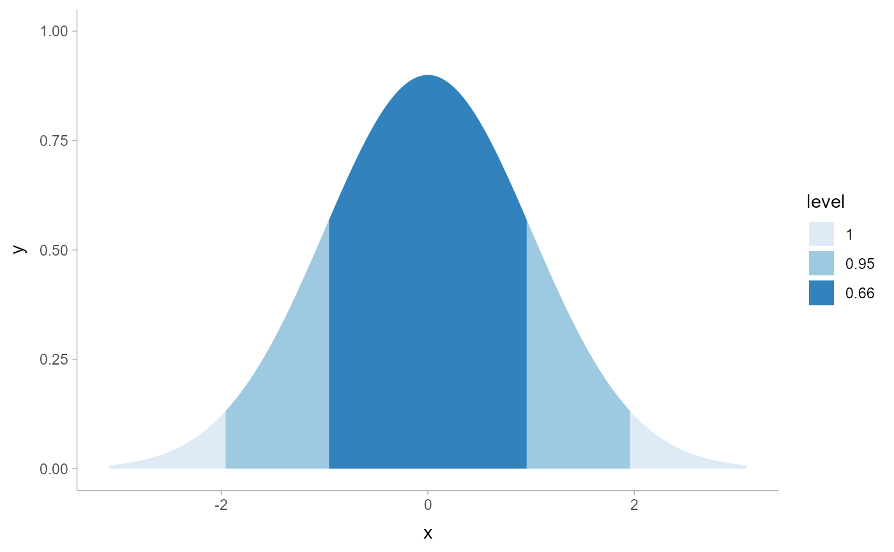

Given a vector of probabilities from a cumulative distribution function (CDF)
and a list of desired quantile intervals, return a vector categorizing each
element of the input vector according to which quantile interval it falls into.
Useful for drawing slabs with intervals overlaid on the density, e.g. using
stat_halfeye() or stat_dist_halfeye()
cut_cdf_qi(p, .width = c(0.66, 0.95, 1), labels = NULL)
Arguments
| p | A numeric vector of values from a cumulative distribution function,
such as values returned by |
|---|---|
| .width | vector of probabilities to use that determine the widths of the resulting intervals. |
| labels | One of:
|
Value
An ordered factor of the same length as p giving the quantile interval to
which each value of p belongs.
See also
See stat_sample_slabinterval() or stat_dist_slabinterval() and
their shortcut stats, which generate cdf aesthetics that can be used with
cut_cdf_qi() to draw slabs colored by their intervals.
Examples
library(ggplot2) library(dplyr) library(scales) library(distributional) theme_set(theme_ggdist()) # with a slab tibble(x = dist_normal(0, 1)) %>% ggplot(aes(dist = x, y = "a")) + stat_dist_slab(aes( fill = stat(cut_cdf_qi(cdf)) )) + scale_fill_brewer(direction = -1, na.value = "gray90")# With a halfeye (or other geom with slab and interval), NA values will # show up in the fill scale from the CDF function applied to the internal # interval geometry data and can be ignored, hence na.translate = FALSE tibble(x = dist_normal(0, 1)) %>% ggplot(aes(dist = x, y = "a")) + stat_dist_halfeye(aes( fill = stat(cut_cdf_qi(cdf, .width = c(.5, .8, .95, 1))) )) + scale_fill_brewer(direction = -1, na.translate = FALSE)# we could also use the labels parameter to apply nicer formatting # and provide a better name for the legend, and omit the 100% interval # if desired tibble(x = dist_normal(0, 1)) %>% ggplot(aes(dist = x, y = "a")) + stat_dist_halfeye(aes( fill = stat(cut_cdf_qi(cdf, .width = c(.5, .8, .95), labels = percent_format(accuracy = 1))) )) + labs(fill = "Interval") + scale_fill_brewer(direction = -1, na.translate = FALSE)